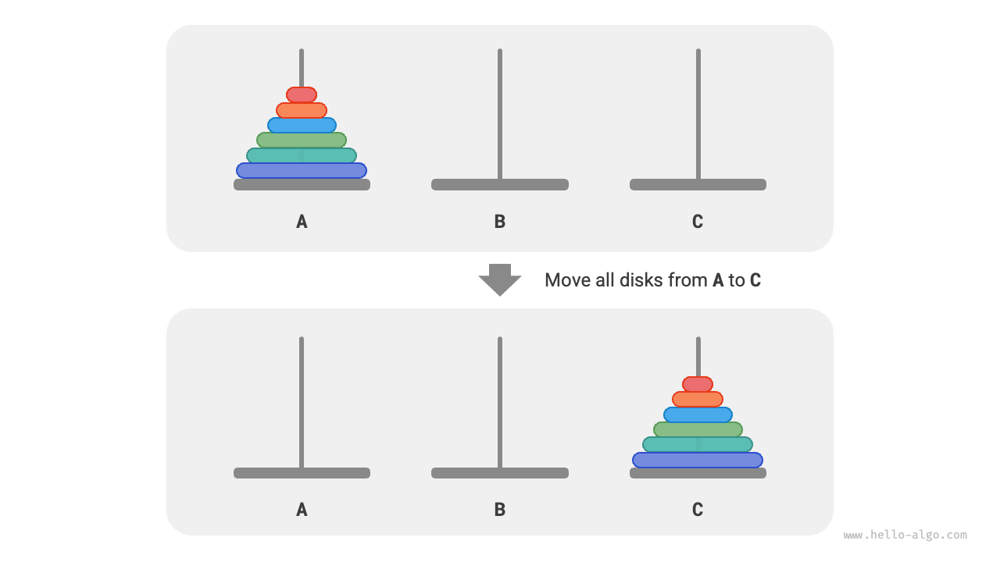
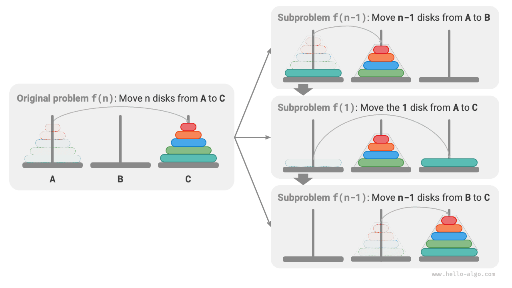
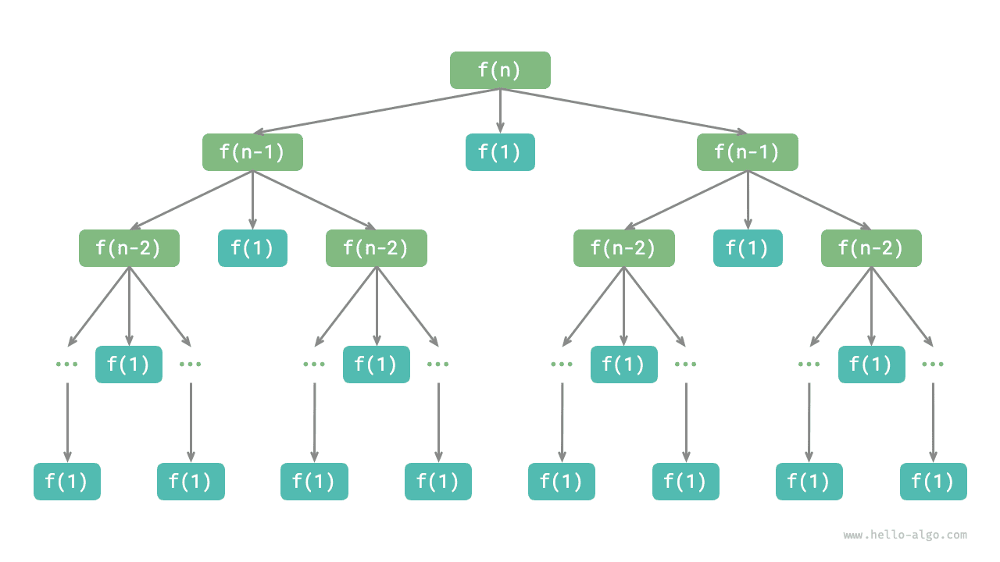

التقسيم والتغلب
مسألة أبراج هانوي
في الترتيب بالدمج وبناء الأشجار الثنائية، فكّكنا المسألة الأصلية إلى مسألتين فرعيتين، حجم كل منهما نصف حجم المسألة الأصلية. أما في مسألة أبراج هانوي، فنتبنّى استراتيجية تفكيك مختلفة.
بمعطى ثلاثة أعمدة يُرمز إليها بـ A وB وC. في البداية، يوجد على العمود A عدد $n$ من الأقراص مرصوفة من الأعلى إلى الأسفل بترتيب تصاعدي حسب الحجم. ومهمتنا نقل هذه الأقراص $n$ إلى العمود C مع الحفاظ على ترتيبها الأصلي (كما يوضح الشكل أدناه). ويجب مراعاة القواعد التالية عند نقل الأقراص.
- لا يمكن أخذ قرص إلا من قمة أحد الأعمدة ووضعه فوق عمود آخر.
- لا يمكن نقل سوى قرص واحد في كل مرة.
- يجب أن يكون القرص الأصغر دائماً فوق القرص الأكبر.

نرمز إلى مسألة أبراج هانوي ذات الحجم $i$ بالرمز $f(i)$. فمثلاً، تمثّل $f(3)$ نقل $3$ أقراص من A إلى C.
التفكير في الحالات الأساسية
كما يوضح الشكل أدناه، في المسألة $f(1)$، عندما يكون هناك قرص واحد فقط، يمكننا نقله مباشرةً من A إلى C.
وكما يوضح الشكل أدناه، في المسألة $f(2)$، عندما يكون هناك قرصان، وبما أنه يجب علينا دائماً إبقاء القرص الأصغر فوق القرص الأكبر، نحتاج إلى استخدام B للمساعدة في النقل.
- أولاً، انقل القرص الأصغر من
AإلىB. - ثم انقل القرص الأكبر من
AإلىC. - وأخيراً، انقل القرص الأصغر من
BإلىC.
ويمكن تلخيص عملية حل المسألة $f(2)$ بأنها: نقل قرصين من A إلى C بمساعدة B. ويُسمى C هنا العمود الهدف، ويُسمى B العمود المؤقت.
تفكيك المسائل الفرعية
في المسألة $f(3)$، عندما يكون هناك ثلاثة أقراص، يصبح الوضع أكثر تعقيداً بعض الشيء.
وبما أننا نعرف بالفعل حلّي $f(1)$ و$f(2)$، يمكننا التفكير من منظور التقسيم والتغلب، بمعالجة القرصين العلويين على A وحدةً واحدة، وتنفيذ الخطوات الموضحة في الشكل أدناه. وبذلك ننجح في نقل الأقراص الثلاثة من A إلى C.
- اجعل
Bهو العمود الهدف وCهو العمود المؤقت، وانقل قرصين منAإلىB. - انقل القرص المتبقي من
Aمباشرةً إلىC. - اجعل
Cهو العمود الهدف وAهو العمود المؤقت، وانقل قرصين منBإلىC.
وفي جوهر الأمر، نفكّك المسألة $f(3)$ إلى مسألتين فرعيتين $f(2)$ ومسألة فرعية واحدة $f(1)$. ويمثّل حل هذه المسائل الفرعية الثلاث بالترتيب حلاً للمسألة الأصلية. وهذا يدل على أن المسائل الفرعية مستقلة ويمكن دمج حلولها.
ومن ذلك يمكننا تلخيص استراتيجية التقسيم والتغلب لحل مسألة أبراج هانوي، كما يوضح الشكل أدناه: فكّك المسألة الأصلية $f(n)$ إلى مسألتين فرعيتين $f(n-1)$ ومسألة فرعية واحدة $f(1)$، وحلّ هذه المسائل الفرعية الثلاث بالترتيب التالي.
- انقل $n-1$ قرصاً من
AإلىBبمساعدةC. - انقل القرص المتبقي $1$ مباشرةً من
AإلىC. - انقل $n-1$ قرصاً من
BإلىCبمساعدةA.
وبالنسبة إلى هاتين المسألتين الفرعيتين $f(n-1)$، يمكننا تفكيكهما تعاودياً بالطريقة نفسها حتى الوصول إلى أصغر مسألة فرعية $f(1)$. وحل $f(1)$ معروف ولا يتطلب سوى عملية نقل واحدة.

تنفيذ الشيفرة
في الشيفرة، نعرّف دالة تعاودية dfs(i, src, buf, tar)، غرضها نقل الأقراص $i$ العلوية من العمود src إلى العمود الهدف tar بمساعدة العمود المؤقت buf:
Go
/* حل مسألة أبراج هانوي */
func solveHanota(A, B, C *list.List) {
n := A.Len()
// انقل الأقراص n العلوية من A إلى C بمساعدة B
dfsHanota(n, A, B, C)
}
TypeScript
/* حل مسألة أبراج هانوي */
function solveHanota(A: number[], B: number[], C: number[]): void {
const n = A.length;
// انقل الأقراص n العلوية من A إلى C بمساعدة B
dfs(n, A, B, C);
}
وكما يوضح الشكل أدناه، تشكّل مسألة أبراج هانوي شجرة تعاود بارتفاع $n$، حيث تمثّل كل عقدة مسألة فرعية تقابل استدعاءً للدالة dfs()، لذا يكون التعقيد الزمني $O(2^n)$ والتعقيد المكاني $O(n)$.

تستمد مسألة أبراج هانوي أصلها من أسطورة قديمة. ففي معبد بالهند القديمة، كان لدى الرهبان ثلاثة أعمدة ماسية شاهقة و$64$ قرصاً ذهبياً مختلف الأحجام. وكان الرهبان ينقلون هذه الأقراص باستمرار، معتقدين أنه عندما يوضع القرص الأخير في مكانه الصحيح، ينتهي العالم.
ومع ذلك، حتى لو نقل الرهبان قرصاً واحداً كل ثانية، لاستغرق الأمر نحو $2^{64} \approx 1.84×10^{19}$ ثانية، أي ما يقرب من $585$ مليار سنة، وهو ما يتجاوز كثيراً التقديرات الحالية لعمر الكون. لذلك، إذا كانت هذه الأسطورة صحيحة، فلا داعي للقلق من نهاية العالم.